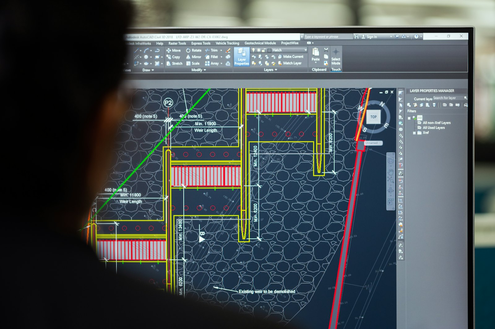
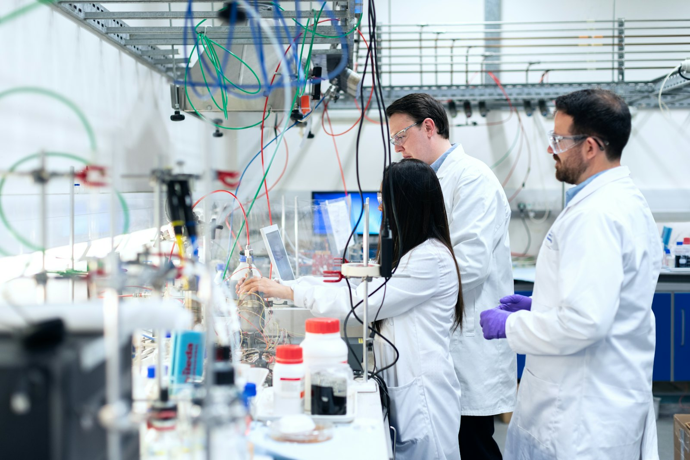

British engineering.
Global water security.
PUREVER designs and builds reverse osmosis and water treatment systems in the United Kingdom and delivers them through a network of partners on five continents.
We exist to make clean water an engineering certainty.
PUREVER was founded on a simple belief: safe water should not depend on luck, geography or budget. It should depend on good engineering. We combine proven membrane science with robust, serviceable hardware and the kind of documentation and support that infrastructure buyers expect.
Today our systems run in hotels, hospitals, factories, farms and communities. Each one is backed by a local partner and supported remotely by our UK engineering team.
Four principles in
every project.
Engineering integrity
We size systems honestly, document them fully and test them before they leave.
Lifetime thinking
Energy, chemicals and spares cost more than the machine. We design for the whole life.
Local partnership
Regional partners hold stock and skills close to every installation.
Measurable impact
Litres delivered, kWh saved and brine reduced. We track what matters.
From the lab
to the field.
Water analysis, process design, fabrication, quality control and remote monitoring are all handled by one accountable team.



Engineered in Britain.
Delivered worldwide.
Our London headquarters handles R&D, process design and quality assurance. Regional partner hubs provide local stock, installation, commissioning and service in every time zone.
From water analysis
to lifetime performance.
One accountable partner for the whole asset lifecycle, with documented quality gates at every step.
Analyse
Lab analysis of the raw water and a site survey to establish the design basis.
- Full ionic profile
- SDI & silt density
- Site audit
Design
Process modelling, membrane projections, and P&ID and 3D layout.
- Membrane projections
- P&ID / GA drawings
- Lifecycle costing
Build
Skid fabrication in SS316 and PVC-U, with factory acceptance testing before shipment.
- ISO 9001 QA
- Pressure tested
- FAT witnessed
Commission
Installation and start-up on site, operator training and performance verification.
- SAT & handover
- Operator training
- O&M manuals
Sustain
Remote monitoring, planned maintenance, CIP and membrane autopsy services.
- 24/7 telemetry
- Spares programme
- Performance contracts
More water.
Less energy. Less waste.
Pumping energy and brine discharge are the two largest environmental costs of desalination. PUREVER engineering reduces both, with low-pressure membranes, isobaric energy recovery and high-recovery designs that return more of every litre to use.

Grow with PUREVER in your region.
We work with distributors, EPC contractors and service companies who share our standards. Partners get engineering support, training and certification, marketing assets, and priority access to stock from our regional hubs.
- Technical training and PUREVER certification
- Design support and membrane projections for your bids
- Co-branded marketing and lead sharing
Ready to engineer your water?
Send us your water analysis and the capacity you need. A PUREVER application engineer will reply within one business day with a preliminary design and budget.